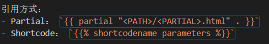
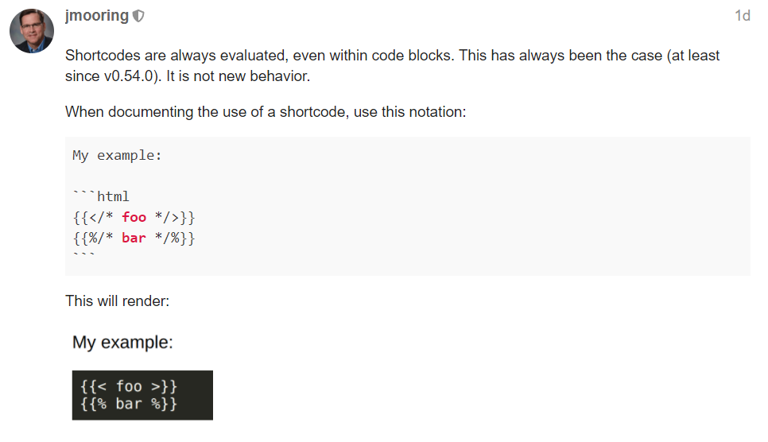

基本概念
什么是 Hugo
Hugo 是一个用 Go 编写的快速静态网站生成器，具有极快的构建速度（每个页面小于1毫秒），拥有大量现成主题，在开发过程中通过 liveload 即时渲染更改，可以托管在任何平台，是一个理想的建站工具。
静态网站生成器
网站生成器的目的是将内容转换为 HTML 文件，大多数网站生成器是动态的，这意味着每次用户请求页面时 HTTP 服务器都会运行生成器以创建新的 HTML 文件。动态站点生成器会将 HTML 文件缓存下来，以提高页面的加载速度。而 Hugo 更进一步，将 HTML 文件直接在计算机上渲染。在将文件复制到托管 HTTP 服务器的计算机之前可以在本地查看这些文件。因为 HTML 文件不是动态生成的，所以 Hugo 是一个静态网站生成器。
快速建站
快速开始
在 Windows 上安装
最简单的方法是直接下载 最新版本的 hugo 安装
请安装 extended 版本，可以对 scss 文件进行编译，否则在之后使用模板时会出现问题
注意：要把 hugo 的路径添加到环境变量 Path 中！
我自己在下载安装扩展版本的时候有点问题，最后重新用 Chocolatey 安装成功，非常方便。其它系统的安装过程可以看 官网文档。
新建网站
hugo version 检查安装是否成功
hugo new site [sitename] 创建一个新的网站
hugo server 开启 Hugo 服务器，可以在本地预览调试网站
结构目录
.
├── archetypes
├── config.toml
├── content
├── data
├── layouts
├── static
└── themes
-
archetypes 文件夹：存放 front matter（前置数据）
-
content 文件夹：存放网页的主要内容 Markdown 文件
-
layouts 文件夹：存放 HTML 模板
-
themes 文件夹：存放现有的主题模板
-
config.toml 文件：全局配置文件
-
data 文件夹：存放数据文件，通常是 json/yaml/toml 文件
-
static 文件夹：存放静态文件，会被直接复制到 public 目录下
使用现有 Hugo 主题
-
在 Hugo 官网 或者 GitHub 上寻找合适的 Hugo 主题
-
进入
themes文件夹，git clone想要使用的主题 -
在配置文件中添加主题：
theme = "themename"
站点部署
利用 Hugo 搭建的网站可以托管在任何地方，包括 Netlify、Heroku、GoDaddy、DreamHost、GitHub Pages、GitLab Pages、Surge、Aerobatic、Firebase、Google Cloud Storage、Amazon S3、Rackspace、Azure 和 CloudFront，并且可以很好地与 CDN 配合使用。无需依赖数据库或 runtime 即可运行。
部署到 GitHub Pages
-
进入本地代码根目录，执行
hugo生成public文件夹 -
在 GitHub 上创建一个新仓库，起名为
github_id.github.io（例如 yuanyi-au.github.io ），将本地public文件夹与此仓库关联，push 到远程仓库中 -
在 GitHub 仓库设置中找到 GitHub Pages，可以看到网站地址
github_id.github.io，就能进行访问了
注意：public 文件夹的内容需要每次在项目根目录执行 hugo 命令后才会更新，然后 push 到远程仓库中由 GitHub Pages 部署
部署到 Netlify
-
安装 Netlify ，授权 GitHub 账号
-
New site from Git
选择平台 - 选择仓库 - 选择分支 - 基本设置（Build command & Publish directory） - deploy site，部署成功就可以访问了
工作原理
如果需要对现有主题进行布局方面的修改，甚至自己创建一个新的主题，就不得不对 Hugo 的工作原理有一定了解。同一些其他的静态网站生成器（如 Jekyll ）一样，Hugo 将网站的内容和逻辑分离开来，方便更好地管理网站内容。在这里简单介绍一下 Hugo 中的内容、模板、页面三个部分以及它们之间的联系。
内容
Hugo 会将 content 文件夹里的 Markdown 文档转换为页面，content 文件夹的目录结构对应着网站目录结构（会生成 section tree）。例如：
└── content
├── _index.md // https://example.com/
├── about.md // https://example.com/about/
├── posts
| ├── _index.md // https://example.com/posts/
| ├── firstpost.md // https://example.com/posts/firstpost/
如果通过命令行 hugo new xxx 创建内容页面，Hugo 会按照 archetypes 中的设置自动创建 title、date 等 front matter。如果是在文件目录下直接创建的内容页面则需要自己在文档开头手动添加 front matter，用 “+++” 或者“—”分隔。
---
title = "Hugo Website"
---
模板
Hugo 将模板存放在两个地方：themes 和 layouts 文件夹。layouts 中的模板优先级高于 themes，如果需要修改现有模板，在 layouts 文件夹中依照 themes 文件夹的目录层级结构编写新的模板即可覆盖。
模板语法
首先推荐一篇特别简洁实用的文章： Hugo, the scope, the context and the dot，看完这篇后基本就可以从零开始写出一个简单的模板。
Hugo 使用 Go 语言的 html/template 库 作为模版引擎， 模板的标签为 {{}} , {{}} 中包含的内容叫“动作”(action)，动作分为两种类型：数据求值与控制结构。
模板是通过将它们应用于数据结构来执行的。模板中的注释引用数据结构的元素来控制执行并导出要显示的值。模板的执行会遍历结构并设置光标， 由句点 “.” 表示，并称为“点”，随着执行的进行到结构中当前位置的值。
-
基础语法：
//点 {{.}} 代表传递给模板的数据，表示当前模板的上下文，可以是 Go 语言中的任何类型，比如字符串、数组、结构体等 //注释 {{/* comment */}} //空格 {{- pipeline -}} // 清除 pipeline 前后的空格 {{- pipeline }} // 清除 pipeline 前面的空格 //变量赋值 {{$变量名 := "值"}} //条件判断 {{if pipeline}} T1 {{else}} T0 {{end}} 如果不为空则输出T1，否则输出T0 {{if pipeline}} T1 {{else if pipeline}} T0 {{end}} //循环语句 {{range pipeline}} T1 {{end}} pipeline 的值必须是数组，切片，map，channel，设置 点. 为数组，切片遍历 map 的值，输出T1 //with 重设点.的值 {{with pipeline}} T1 {{else}} T0 {{end}} 如果 pipeline 的值为空， 点. 的值不受影响,输出T1，否则 点. 的值设置成 pipeline 的值，输出T0 -
定义子模板：
//define {{define "name"}} T1 {{end}} 定义一个特定名称的模板 //template {{template "name"}} 引入指定名称的模板，不传入任何数据. {{template "name" pipeline}} 引入指定名称的模板，设置模板上下文 点. 的值为 pipeline 的值 //block {{block "name" pipeline}} T1 {{end}} 定义特定名称的模板，并在当前位置引入该名称的模板，模板的上下文 点. 的值为 pipline 的值，如果该名称的模板未实现(不存在)，则输出T1
模板类型
基本模板类型
-
single template：用于渲染单个页面（Leaf Bundle）的内容
-
list template：用于渲染具有子页面的页面（Branch Bundle）的内容
-
partial template：能够被其他模版引用，可以理解为模版级别的组件，例如 header、footer 等
Partial 与 Shortcode 的区别
一般来说，需要经常复用的局部组件使用 Partial，因为 Partial 可以被任何模板引用，而 Shortcode 只能被 content 引用。
引用方式：
- Partial：
{{ partial "<PATH>/<PARTIAL>.html" . }} - Shortcode：
{{% shortcodename parameters %}}
以及两者的参数传入也略有不同，可以参见 官方文档 中的相关内容。
页面
内容 + 模板 = 页面
页面捆绑（Page Bundles）
- Leaf Bundle：无子页面
- Branch Bundle：有子页面
页面和模板的对应关系
页面和模板的对应关系是根据页面的一系列属性决定的，包括: Kind、Output Format、Language、Layout、Type、Section，其中kind、layout、type、section 用的比较多。
-
kind：用于确定页面的类型，单页面使用 single.html 为默认模板页，列表页使用 list.html 为默认模板页，值不能被修改
-
section：用于确定 section tree 下面的文章的模板，section tree 的结构是由 content 目录结构生成的，不能被修改，content 目录下的一级目录自动成为 root section，二级及以下的目录需要在目录下添加 _index.md 文件才能成为 section tree 的一部分，如果页面不在 section tree 下 section 的值为空
-
type：可以在 front matter 中设置，用户指定模板的类型. 默认情况下 type 的值等于 section 或 page（section为空的时候）的值
-
layout：可以在 front matter 中设置，指定具体的模板名称
Hugo 按照从上到下的顺序依次查找模板并应用（特定页面模板 - 某一类页面的模板 - 全站模板）
问题解决
Markdown 代码块中的 Shortcodes 被解析
这个问题很有趣，是在写这篇博客过程中遇到的。
-
问题描述：
当我在写模板引用方式的时候，我是这样写的：

执行
hugo或者hugo server时报错：failed to extract shortcode: template for shortcode "shortcodename" not found -
问题解决：
在 Hugo 社区里得到的答复：

Public 文件夹渲染出错
-
问题描述：
hugo server在本地运行时没有问题，但部署上线后打开网页发现渲染缺失 css 和 js 文件 -
问题解决：
问题出在 Hugo 本身处理 URL 的方式上，可以参见 issue
baseURL = "//example.org" relativeURLs = true上面的方法没有解决我的问题，后来试了两种方法可行：
`# baseURL = "example.org"` `baseURL = "\"`
找不到新增的页面
-
问题描述：
增加的内容在 index 页面有链接，但点开却找不到页面
-
问题解决：
使用
hugo -t theme_name代替hugo命令进行编译
图片加载问题
-
问题描述：
Markdown 文档里的本地图片无法显示
-
解决方法：
目录结构：
├── content └── posts ├── cat.md ├── dog.md └── images ├── cat.png └── dog.png图片链接：
我用这个方法能成功加载出图片，但好像有些人不行，可以看看 Hugo 社区里的讨论 Replace Image Reference link
最后修改时间
可以通过两种方式记录 Last Modified 时间
-
在文档开头加上时间
date: 1990-01-01T00:00:00+00:00 lastmod: 1995-04-04T00:00:00+00:00 -
在 config.toml 内设置使用 Git 记录
enableGitInfo = true
参考资料
“Static Site Generators”, O’Reilly
Could shortcodes and partials be unified?
Hugo, the scope, the context and the dot
Hugo’s Directory Structure Explained
Hugo - Static Site Generator | Tutorial
Creating a Blog with Hugo and Github in 10 minutes
Creating a Hugo Theme From Scratch
最后修改于 2021-11-03